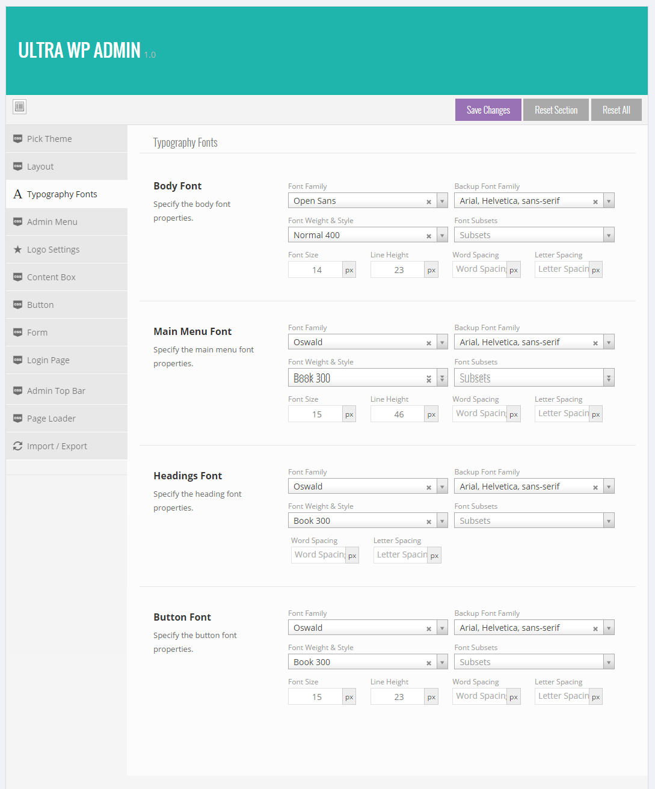
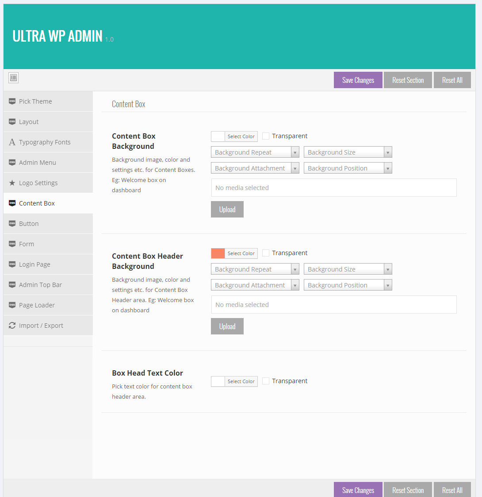

Ultra WordPress Admin theme
Bring your WordPress Admin to life.
- created (mm/dd/yyyy): 10/16/2014
- latest update (mm/dd/yyyy): 10/16/2014
- by: themepassion
- email: themepassion@jaybabani.com
Thank you for purchasing our plugin. If you have any questions that are beyond the scope of this help file, please feel free to email at ultra@jaybabani.com. Thanks so much!
Installation and setup
Plugin installation
First install WordPress (Installing WordPress) , then please log in to admin panel to install Ultra WordPress Admin Theme plugin.
There are 2 ways of installing a plugin
1. Install via WordPress Admin
2. Upload via FTP directly to your server.
1. Install via WordPress Admin
To install the plugin correctly, you find plugin ultra-wp-admin.zip file downloaded from marketplace.
Go to WordPress admin panel -> Plugins -> Add New to upload plugin.
2. Upload via FTP directly to your server.
To install the plugin correctly, you MUST UNZIP ultra-wp-admin.zip file downloaded from marketplace.
- Open your FTP client and connect to your server.
- Locate your extracted folder and copy the "ultra-admin" folder in the plugins directory of your WordPress installation. Plugin directory of default WordPress installation is your_rooth_path/wp-content/plugins/
- The correct plugin folder must have the ultra-core.php file within the root. i.e. your_rooth_path/wp-content/plugins/ultra-admin/ultra-core.php
Log into the WordPress admin, go to Plugins → You will find a new plugin "Ultra WordPress Admin Theme" in the list. Now click on "Activate" link below it.
You will see admin theme in action directly..
Updating the Plugin
If you wish to upgrade via FTP, you can do the following:
- Open your FTP client and connect to your server.
- Locate the plugin in the plugins directory e.g. ‘/wp-content/plugins/ultra-admin‘
- Make a backup if needed by downloading the current version of the Plugin to your computer.
- Upload the new files from ultra-admin folder to the exact same directory, overwriting the existing files.
- When completed, the new version will be active.
Control Panel
Ultra Admin comes with advanced control panel options. After the plugin is installed correctly, a new tab is added in the Admin Menu named as Ultra Admin.
All the options like selecting a theme, logo settings, page loader settings, color settings, typography, forms, buttons etc. can be found in this panel.
You can take some time out and go through all the detailed options.
Select Theme
Using Ultra Admin you can either select any inbuilt theme or can create your own theme.
Go to Admin Menu → Ultra Admin → Pick a Theme section.
Select Custom Option to build your own theme or Select any inbuilt theme option.
Click save changes button.
Create a Theme
This plugin lets you create your own admin theme. As mentioned earlier you need to select Custom Theme option first in Ultra Admin → Pick a theme section.
After that you will notice many other styling settings available in different subsections of Ultra Admin Section like Logo settings, typography, top bar, form, menu etc.
Go to all these sections to make your changes and click save changes button when done.
This will generate a new CSS file on the server and this file will be applied automatically to your wordpress admin section. This way you can create a theme as many times as needed.
Logo & Favicon
With Ultra Admin you can have your own branding in Admin Panel. Go to Ultra Admin → Logo Settings section.
Upload your logo and favicon images of proper dimensions as mentioned in the section. You can upload logo, login page logo, Collapsed menu logo (smaller in size), favicon images.
Demo images are already part of plugin directory. You can also replace theme in the directory via FTP.
Login Page
To access Theme option go to Ultra admin -> Login Page Section.
In this section you can build your own login page. Pick the backgroud, color, opactiy, button color, form styles etc. in this section.
Give your users/visitors a unique look of your brand by customizing this page based on your branding needs.
Typography
Typography is unique feature of this plugin.
Power of 650+ Google fonts in your admin panel is a amazing addon.
Pick different fonts for menu, heading, button and body text. Also pick the back up font just in case online access to google fonts directory is not available. Thus you can also use your desktop fonts at will along with google fonts.

You can set options like font size, font weight, line height, word spacing and letter spacing too in this section for any font.
Admin Top Bar
You can also control the appearance of default admin panel top bar using Ultra Admin.
Ultra Admin also gives you an option to enable or disable top bar on your website along with your admin panel.
Enable or disable top bar at will from the top bar section in control panel.
You can also pick from two different styles of appearance.
Plus customize its styling options based on your liking or branding
Form & Buttons
Set the form and buttons layout of your admin panel via WP Admin → Ultra Admin → Form and Button sections respectively.
Pick settings like page text color, backround color etc from their respective sections.
Click save changes when done.
These options are applied throughout the Admin panel generally.
Page Loader Integration
Ultra admin theme comes with a integrated page loader progress bar at top of page. This page loader can be seen in action at the time when the page is loading at top.
Its a nice addon to know the how much proportion of page content is loaded and is ready to use.
You can enable or disable it from control panel as well.

Content Boxes
Set the content boxes layout of your admin panel via WP Admin → Ultra Admin → Content Boxes section.
Pick settings like page text color, backround color, heading background etc from this section.
Click save changes when done.
These options are applied throughout the Admin panel generally.

Uninstall
Go to your WordPress Admin panel > Plugins. You will find a plugin "Ultra Admin WordPress Theme" in the list. Now click on "Deactivate" link below it.
This will uninstall the plugin and restore your WordPress admin theme to default style that comes with WordPress installation package.
THANK YOU!
Once again, thank you so much for purchasing this Plugin. As I said at the beginning, I'd be glad to help you if you have any questions relating to this plugin.